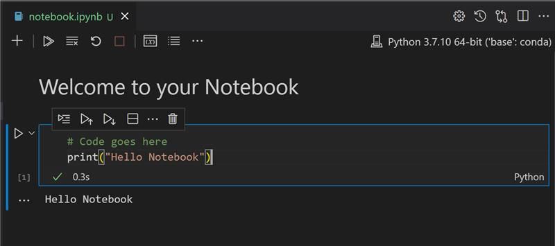

Get started with Python and Scikit-learn for regression models⚓︎

Sketchnote by Tomomi Imura
Pre-lecture quiz⚓︎
This lesson is available in R!⚓︎
Introduction⚓︎
In these four lessons, you will discover how to build regression models. We will discuss what these are for shortly. But before you do anything, make sure you have the right tools in place to start the process!
In this lesson, you will learn how to:
- Configure your computer for local machine learning tasks.
- Work with Jupyter notebooks.
- Use Scikit-learn, including installation.
- Explore linear regression with a hands-on exercise.
Installations and configurations⚓︎

üé• Click the image above for a short video working through configuring your computer for ML.
- Install Python. Ensure that Python is installed on your computer. You will use Python for many data science and machine learning tasks. Most computer systems already include a Python installation. There are useful Python Coding Packs available as well, to ease the setup for some users.
Some usages of Python, however, require one version of the software, whereas others require a different version. For this reason, it's useful to work within a virtual environment.
- Install Visual Studio Code. Make sure you have Visual Studio Code installed on your computer. Follow these instructions to install Visual Studio Code for the basic installation. You are going to use Python in Visual Studio Code in this course, so you might want to brush up on how to configure Visual Studio Code for Python development.
Get comfortable with Python by working through this collection of Learn modules
üé• Click the image above for a video: using Python within VS Code.

-
Install Scikit-learn, by following these instructions. Since you need to ensure that you use Python 3, it's recommended that you use a virtual environment. Note, if you are installing this library on a M1 Mac, there are special instructions on the page linked above.
-
Install Jupyter Notebook. You will need to install the Jupyter package.
Your ML authoring environment⚓︎
You are going to use notebooks to develop your Python code and create machine learning models. This type of file is a common tool for data scientists, and they can be identified by their suffix or extension .ipynb.
Notebooks are an interactive environment that allow the developer to both code and add notes and write documentation around the code which is quite helpful for experimental or research-oriented projects.

üé• Click the image above for a short video working through this exercise.
Exercise - work with a notebook⚓︎
In this folder, you will find the file notebook.ipynb.
- Open notebook.ipynb in Visual Studio Code.
A Jupyter server will start with Python 3+ started. You will find areas of the notebook that can be run, pieces of code. You can run a code block, by selecting the icon that looks like a play button.
- Select the
mdicon and add a bit of markdown, and the following text # Welcome to your notebook.
Next, add some Python code.
- Type print('hello notebook') in the code block.
- Select the arrow to run the code.
You should see the printed statement:
```output
hello notebook
```

You can interleaf your code with comments to self-document the notebook.
✅ Think for a minute how different a web developer's working environment is versus that of a data scientist.
Up and running with Scikit-learn⚓︎
Now that Python is set up in your local environment, and you are comfortable with Jupyter notebooks, let's get equally comfortable with Scikit-learn (pronounce it sci as in science). Scikit-learn provides an extensive API to help you perform ML tasks.
According to their website, "Scikit-learn is an open source machine learning library that supports supervised and unsupervised learning. It also provides various tools for model fitting, data preprocessing, model selection and evaluation, and many other utilities."
In this course, you will use Scikit-learn and other tools to build machine learning models to perform what we call 'traditional machine learning' tasks. We have deliberately avoided neural networks and deep learning, as they are better covered in our forthcoming 'AI for Beginners' curriculum.
Scikit-learn makes it straightforward to build models and evaluate them for use. It is primarily focused on using numeric data and contains several ready-made datasets for use as learning tools. It also includes pre-built models for students to try. Let's explore the process of loading prepackaged data and using a built in estimator first ML model with Scikit-learn with some basic data.
Exercise - your first Scikit-learn notebook⚓︎
This tutorial was inspired by the linear regression example on Scikit-learn's web site.

üé• Click the image above for a short video working through this exercise.
In the notebook.ipynb file associated to this lesson, clear out all the cells by pressing the 'trash can' icon.
In this section, you will work with a small dataset about diabetes that is built into Scikit-learn for learning purposes. Imagine that you wanted to test a treatment for diabetic patients. Machine Learning models might help you determine which patients would respond better to the treatment, based on combinations of variables. Even a very basic regression model, when visualized, might show information about variables that would help you organize your theoretical clinical trials.
✅ There are many types of regression methods, and which one you pick depends on the answer you're looking for. If you want to predict the probable height for a person of a given age, you'd use linear regression, as you're seeking a numeric value. If you're interested in discovering whether a type of cuisine should be considered vegan or not, you're looking for a category assignment so you would use logistic regression. You'll learn more about logistic regression later. Think a bit about some questions you can ask of data, and which of these methods would be more appropriate.
Let's get started on this task.
Import libraries⚓︎
For this task we will import some libraries:
- matplotlib. It's a useful graphing tool and we will use it to create a line plot.
- numpy. numpy is a useful library for handling numeric data in Python.
- sklearn. This is the Scikit-learn library.
Import some libraries to help with your tasks.
- Add imports by typing the following code:
import matplotlib.pyplot as plt
import numpy as np
from sklearn import datasets, linear_model, model_selection
Above you are importing matplotlib, numpy and you are importing datasets, linear_model and model_selection from sklearn. model_selection is used for splitting data into training and test sets.
The diabetes dataset⚓︎
The built-in diabetes dataset includes 442 samples of data around diabetes, with 10 feature variables, some of which include:
- age: age in years
- bmi: body mass index
- bp: average blood pressure
- s1 tc: T-Cells (a type of white blood cells)
✅ This dataset includes the concept of 'sex' as a feature variable important to research around diabetes. Many medical datasets include this type of binary classification. Think a bit about how categorizations such as this might exclude certain parts of a population from treatments.
Now, load up the X and y data.
üéì Remember, this is supervised learning, and we need a named 'y' target.
In a new code cell, load the diabetes dataset by calling load_diabetes(). The input return_X_y=True signals that X will be a data matrix, and y will be the regression target.
-
Add some print commands to show the shape of the data matrix and its first element:
X, y = datasets.load_diabetes(return_X_y=True) print(X.shape) print(X[0])What you are getting back as a response, is a tuple. What you are doing is to assign the two first values of the tuple to
Xandyrespectively. Learn more about tuples.You can see that this data has 442 items shaped in arrays of 10 elements:
(442, 10) [ 0.03807591 0.05068012 0.06169621 0.02187235 -0.0442235 -0.03482076 -0.04340085 -0.00259226 0.01990842 -0.01764613]✅ Think a bit about the relationship between the data and the regression target. Linear regression predicts relationships between feature X and target variable y. Can you find the target for the diabetes dataset in the documentation? What is this dataset demonstrating, given that target?
-
Next, select a portion of this dataset to plot by selecting the 3rd column of the dataset. You can do this by using the
:operator to select all rows, and then selecting the 3rd column using the index (2). You can also reshape the data to be a 2D array - as required for plotting - by usingreshape(n_rows, n_columns). If one of the parameter is -1, the corresponding dimension is calculated automatically.
X = X[:, 2]
X = X.reshape((-1,1))
✅ At any time, print out the data to check its shape.
- Now that you have data ready to be plotted, you can see if a machine can help determine a logical split between the numbers in this dataset. To do this, you need to split both the data (X) and the target (y) into test and training sets. Scikit-learn has a straightforward way to do this; you can split your test data at a given point.
X_train, X_test, y_train, y_test = model_selection.train_test_split(X, y, test_size=0.33)
-
Now you are ready to train your model! Load up the linear regression model and train it with your X and y training sets using
model.fit():model = linear_model.LinearRegression() model.fit(X_train, y_train)✅
model.fit()is a function you'll see in many ML libraries such as TensorFlow -
Then, create a prediction using test data, using the function
predict(). This will be used to draw the line between data groupsy_pred = model.predict(X_test) -
Now it's time to show the data in a plot. Matplotlib is a very useful tool for this task. Create a scatterplot of all the X and y test data, and use the prediction to draw a line in the most appropriate place, between the model's data groupings.
plt.scatter(X_test, y_test, color='black') plt.plot(X_test, y_pred, color='blue', linewidth=3) plt.xlabel('Scaled BMIs') plt.ylabel('Disease Progression') plt.title('A Graph Plot Showing Diabetes Progression Against BMI') plt.show()

✅ Think a bit about what's going on here. A straight line is running through many small dots of data, but what is it doing exactly? Can you see how you should be able to use this line to predict where a new, unseen data point should fit in relationship to the plot's y axis? Try to put into words the practical use of this model.
Congratulations, you built your first linear regression model, created a prediction with it, and displayed it in a plot!
üöÄChallenge‚öìÔ∏é
Plot a different variable from this dataset. Hint: edit this line: X = X[:,2]. Given this dataset's target, what are you able to discover about the progression of diabetes as a disease?
Post-lecture quiz⚓︎
Review & Self Study⚓︎
In this tutorial, you worked with simple linear regression, rather than univariate or multiple linear regression. Read a little about the differences between these methods, or take a look at this video
Read more about the concept of regression and think about what kinds of questions can be answered by this technique. Take this tutorial to deepen your understanding.
Assignment⚓︎
创建日期: November 22, 2023